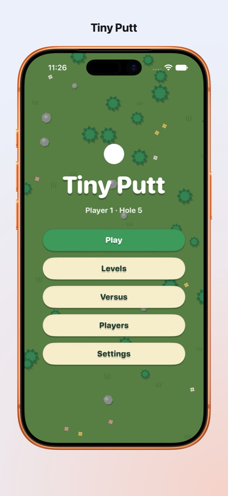
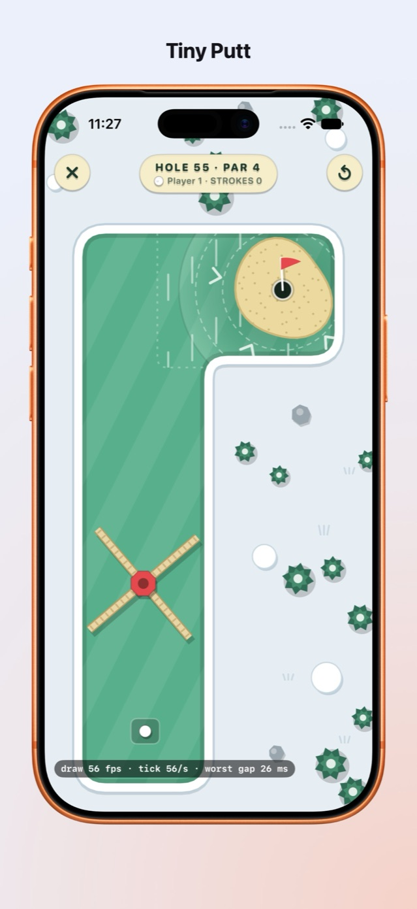
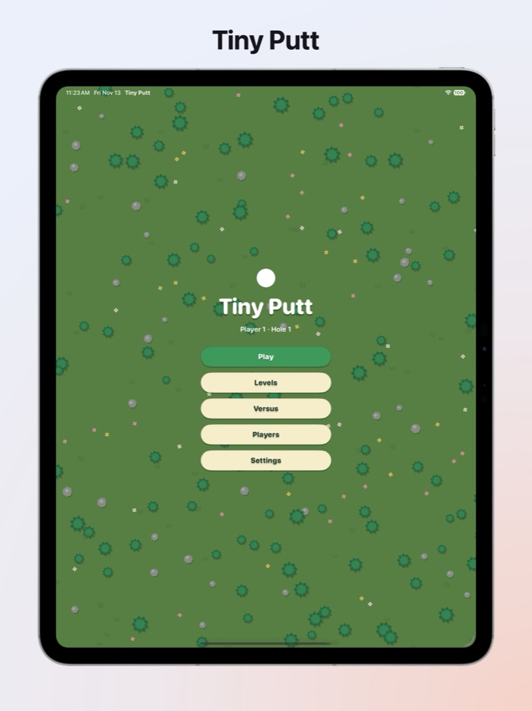
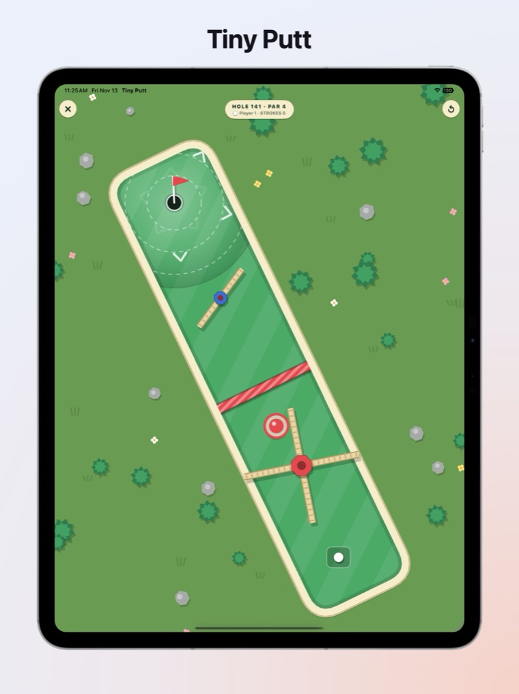
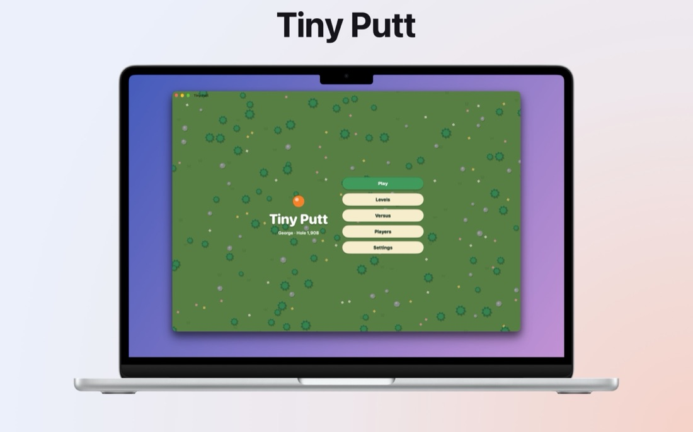
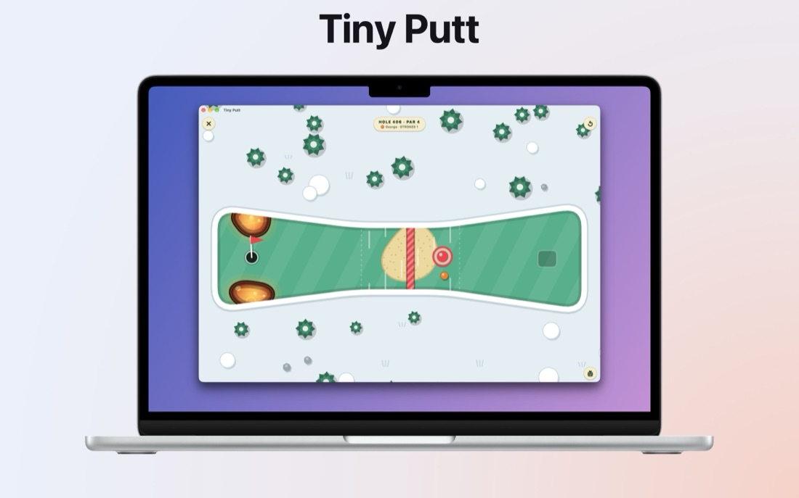

Pull back, let go
Drag away from the ball. A ring fills as the putt gets harder, and a dotted line shows the real route the ball will take.
Quick holes · Easy to learn
Pull back. Let go. Sink it.
Tiny Putt is a friendly top-down mini-golf game for short breaks. Work through hundreds of holes, replay your favourites, or pass one screen around with friends. It has no ads and nothing to buy.
Free · No ads · Works offline
Pull back anywhere on the screen, watch the power ring fill, and let go. That's the whole control scheme.
Hand-made first holes, then hundreds more that get trickier, and every one of them is proven to be finishable.
Pass and play with a separate save for each player, or take on a friend in Versus on the very same holes.
How it works
No menus to learn and no clutter. Pull back to aim, and the ball goes the other way, like a slingshot.
Drag away from the ball. A ring fills as the putt gets harder, and a dotted line shows the real route the ball will take.
Every hole fits on screen at once, scaled to your device and turned a quarter if that makes it bigger.
Balls roll, bounce and slow down the way you'd expect. Nothing is fudged, so a good shot is always rewarded.
Scroll a picture of every hole, see your best score on each, and replay any one you like. Skipped one? Come back to it later.
Each player keeps their own progress. In Versus, everyone plays the same hole in turn, and the first ball home goes first.
Four ball colours are free and eight more are earned by sinking holes, going under par and winning Versus games.
Putts, bounces, splashes and cheers, all made inside the app. Sound and haptics each have a switch.
Scales to fill iPhone, iPad and Mac, upright or sideways, and keeps its buttons clear of notches and rounded corners.
Into the water or lava costs one stroke, and the ball goes back to where you last putted from.
Things in your way
Play through meadow, farm, desert and winter courses, with a new twist arriving every few levels.
Sand and mud slow you down, ice sends you sliding, and water and lava cost a stroke. Hills and slope belts push the ball, and wind gusts nudge it.
Windmills, spinners, sliding gates, pendulums and pistons. Time your putt, and every hole is checked so there's always a fair way through.
Portals, tunnels, bumpers, magnets, speed pads, spring bars, one-way gates and bridges.
Jump a gap off a ramp, press a switch to open a door, or break a brick wall to open the way to the cup.
A look inside
The same game on iPhone, iPad and Mac, with the hole scaled to fit each screen.






Simple by design
Tiny Putt is made for a few quick minutes at a time. There's nothing to sign up for, nothing to buy, and nothing that gets in the way.
Free, with no ads and no purchases.
For iPhone, iPad and Mac (iOS 18, iPadOS 18, macOS 15 or later).